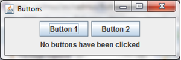
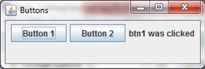
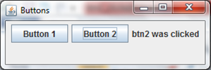
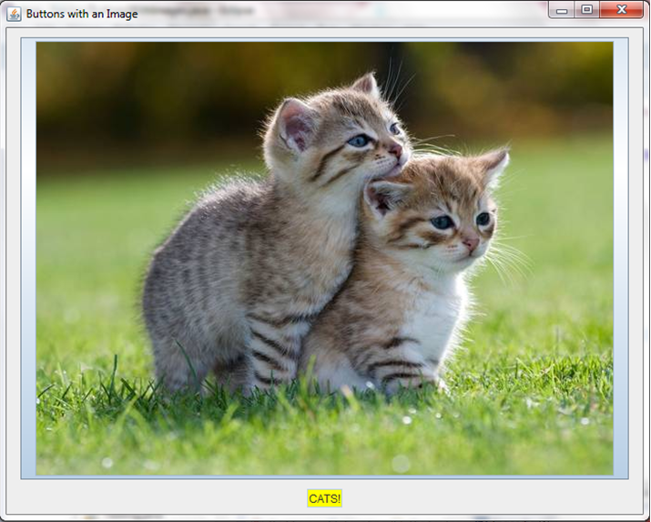
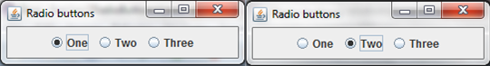
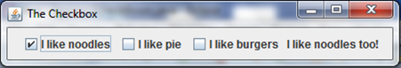

Buttons
In our next application, the buttons application, we have to be able to receive user input i.e. button presses. We will use the JButton class. The imports required for this application will be:
import java.awt.FlowLayout;
import java.awt.event.ActionEvent;
import java.awt.event.ActionListener;
import javax.swing.JFrame;
import javax.swing.JButton;
import javax.swing.JLabel;
Here is the code, copy it:
public class Buttons extends JFrame implements ActionListener {
JButton btn1 = new JButton("Button 1");
JButton btn2 = new JButton("Button 2");
JLabel label = new JLabel("No buttons have been clicked", JLabel.CENTER);
public static void main(String[] args) {
new Buttons();
}
public Buttons() {
btn1.addActionListener(this);
btn2.addActionListener(this);
add(btn1);
add(btn2);
add(label);
setLayout(new FlowLayout());
setSize(300, 100);
setTitle("Buttons");
setVisible(true);
setDefaultCloseOperation(EXIT_ON_CLOSE);
}
public void actionPerformed(ActionEvent e) {
if(e.getSource() == btn1) {
label.setText("btn1 was clicked");
} else if(e.getSource() == btn2) {
label.setText("btn2 was clicked");
}
}
}
Notice the implements ActionListener. Don't worry about that now. Just think of it as a different kind of extends. Rather than inheriting all the methods of the class in front of it, implements means that the class will contain the methods mandated by the thing in front of it. In this case it is the actionPerformed() method, which you do not call. By setting the ActionListener of btn1 and btn2 to this i.e. the current instance of Buttons, you are saying whenever btn1 or btn2 are clicked, you want them to pass on the event to the current instance of Buttons. The e variable stores information about the event. getSource() will return the button that was pressed.
Finally, the setText() method on the label allows you to dynamically change the text.
These are what should be outputted at the start; when the first button is clicked; and when the second button is clicked:



Ex 1
Use what you have been taught here to create a random number generator that generates a number between 1 to 100.
Adding Images
These buttons are all well and good, but to be honest, they don't look very good. For that reason, it's time to find out how to add images to buttons. You do this in much the same way that you add images to labels, using ImageIcons. So, to do this you would include the following code:
ImageIcon image = new ImageIcon("cute cat picture.jpg");
button = new JButton(image);
Doing this will set the button to have an image on it instead of text. Add a panel and a text field (you will learn about these later), and you can get something like this:

And yes, you have permission to scream 'CUUUUUUUUTTTTEEEEE' in a very high-pitched voice.
Ex 1
Make a JButton yourself. Have it change a label from "No buttons pressed" to "The button has been pressed" using the ActionListener. If, you want a challenge, add more than one button or make them contain pictures.
N.B. not all pictures require a tag of 'cute'.
JRadioButtons
A radio button is a button that you often see on multiple choice quizzes, the ones that are circular and fill in when you click them. To create these you have to use JRadioButtons, which work exactly the same as normal buttons. To create one you would have to do this:
JRadioButton btn1 = new JRadioButton("One");
//where "One" is the label of the button.
Adding this to the JFrame will create a radio button. These buttons also interact with ActionListener. However, what use would a radio button be if you could click more than one at the same time? Anything that requires only one option being selected would be broken. To fix this you have to add the buttons ot a ButtonGroup. This makes sure that only one option works at a time. The following code would be used:
ButtonGroup buttons = new ButtonGroup();
to create the buttongroup, and then:
buttons.add(btn1);
in the constructor to add the button to the button group.Therefore the following would be outputted:

Ex 2
Make 3 radio buttons with different names of subjects (History, Computing, Maths etc.) and have a JLabel ask which is the user's favourite. Also have the JLabel respond to that with an appropriate message.
JCheckBoxes
Check boxes are exactly the same a radio buttons, only look slightly different. These, instead of becoming a filled circle upon being clicked, become a ticked box. To use these you will require a ButtonGroup, as before, and to import JCheckBoxes. These also interact with ActionListeners. The code for these is pretty intuitive, but I'll display it anyway:
JCheckBox one = new JCheckBox("Noodles");
Using these you can create things like the following:

Ex 3
Create 3 check boxes with custom names, and use ActionListener to display an appropriate message depending on which box hads been checked.